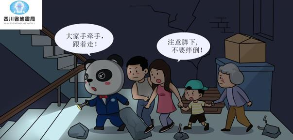
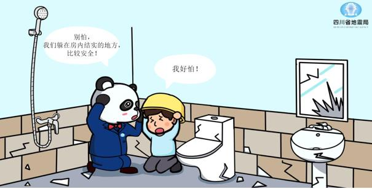
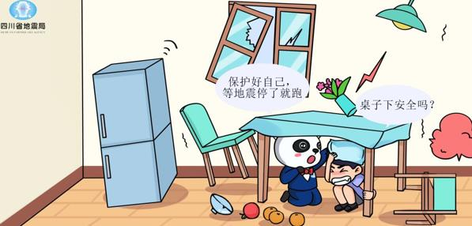
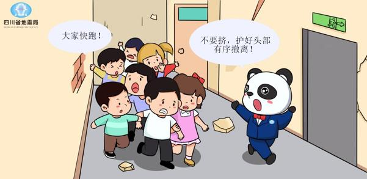
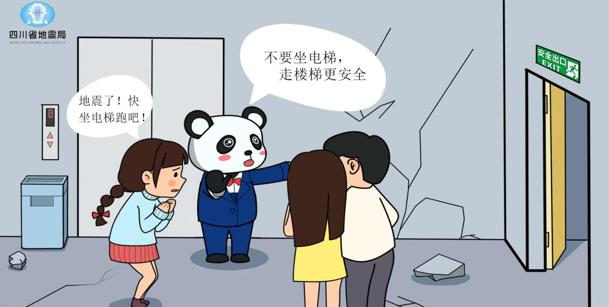
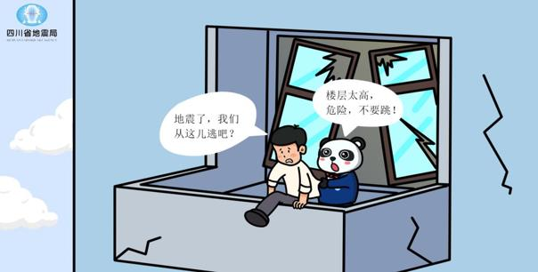

Earthquakes can occur during the day or at night. The 6.0-magnitude earthquake that occurred in the early morning of September 16 in the vicinity of Luzhou City, Sichuan Province, and the 4.7-magnitude earthquake in Gong County on November 17 at 23:00 both happened at night. If a strong earthquake occurs suddenly at night, especially when the power supply is suddenly interrupted, and everything is pitch black indoors and outdoors, what should we do?
First, stay calm and take cover on the spot. Generally, people are indoors at night. In the event of a sudden earthquake, it is advisable to take cover indoors and wait for the strong shaking to subside before evacuating outdoors. Running outdoors in the dark can easily lead to injuries from falls or getting hit by falling objects like bricks, making it even more unsafe. For houses with typical brick and concrete structures, smaller rooms such as bathrooms are often safer. The corners, edges, and near load-bearing walls and structural columns are relatively safe locations. During an earthquake, it is advisable to prioritize taking cover in these areas. In recent years, many reinforced concrete frame structures have been constructed in urban areas, which have a certain degree of seismic performance and are generally safer. In such buildings, areas near reinforced concrete frames and next to shear walls (seismic walls) are considered safe. Regardless of the building structure, balconies and areas around large windows are relatively dangerous and should be avoided as much as possible.
While taking cover, you can choose to hide under or beside sturdy furniture, such as under a solid table or behind a high-backed sofa. At the same time, be cautious about avoiding hanging objects like ceiling fans and large pendant lights. Also, steer clear of furniture or large household appliances that are prone to tipping over, such as tall bookshelves, wardrobes, cabinet-style air conditioners, or refrigerators.
If you are sleeping when the earthquake occurs and don't have time to calmly get out of bed, in emergency situations, you can even roll to the edge of the bed wrapped in a blanket, lie down, or crouch on the ground, keeping your body lower than the bed surface. Grab a pillow, cushion, or something similar to protect your head; it can provide some protection. Second, find suitable lighting tools. Flashlights are the best lighting tools. Nowadays, most smartphones have flashlight functions that can be used temporarily as flashlights. Be cautious when using open flames for lighting—only do so when confirming there are no gas leaks and no flammable substances around to prevent fires! Third, form a "human chain" and evacuate in an orderly manner. Intense shaking generally does not last too long. After the earthquake ends, you should evacuate outdoors. When evacuating in total darkness, it's best to form a "human chain," with people familiar with the interior of the building, bold and careful, and physically strong leading. The person at the front should hold a lighting device, and the others should hold hands, moving in an orderly manner, leaving the building. The evacuation speed should be slow, and when turning corners, going downstairs, or encountering obstacles, the front and back of the "human chain" should communicate verbally to ensure safety. Each "human chain" should not be too long. In situations with a large number of people, it can be divided into several chains, evacuating in groups.
If you really can't find any lighting equipment, you can only evacuate by groping in the dark. In this case, the "human chain" method should still be used. The person at the very front can use both hands to feel the way, and each person behind should hold onto the front person's belt or clothing with one hand while feeling the way forward with the other hand. The areas to feel for are generally the walls and stair railings. Move at a slower pace, pay more attention to verbal communication, and ensure safety. After a strong earthquake, elevators often experience malfunctions and power outages, so never use elevators during evacuation!
Evacuation must be orderly. When going downstairs in the dark, do not run, just walk. Remember, in situations like evacuating after the earthquake has already ended, there's no need to rush; orderly evacuation may appear slower, but it is much more effective. Otherwise, trying to move fast may lead to trampling and squeezing accidents.
We believe that by mastering these essentials, if you really encounter an earthquake at night, you can deal with it calmly and minimize the casualties and losses caused by the earthquake as much as possible.